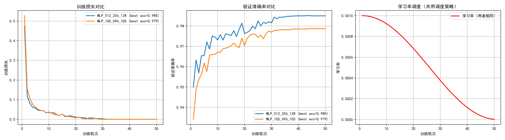

和神经网络的最初相遇：mlp
简单学习mlp并使用其训练一个mnist数据集识别#
1. 引言#
- 简单了解什么是mlp 他的基本结构是什么
- 使用numpy手动实现一个简单的反向传播
- 使用pytorch实现一个mnist数据集识别，并验证不同模型结构下的效果对比
2. 简单介绍mlp#
- 多层感知机即mlp 在笔者看来是通过一定的数学方法自动训练出一个可以拟合难以用规则明确指出映射关系的工具，是在用计算机的强大算力实现一个黑盒函数，投喂进去的一切数据都会被自动关系到另一个数据
- 步骤包括这几步
1.前向传播：先根据已经知道的数据通过本函数计算出结果
2.损失计算：按照根据前向传播推断出的数据和标准数据比较，计算出差异值
3.反向传播：通过求偏导数的方法，来计算如何改变参数从而让本函数求出来的值和标准值差异更小
4.参数更新：更新参数，让拟合效果更好
3.如何手动实现一个简单的反向传播#
def one_hot(y, num_classes=10):
eye = np.eye(num_classes)
return eye[y]
Y_train = one_hot(y_train)
Y_test = one_hot(y_test)
print(f"训练集大小: {X_train.shape[0]}, 测试集大小: {X_test.shape[0]}")
D_in = 784
H = 128
D_out = 10
batch_size = 128
learning_rate = 0.01
epochs = 1000
w1 = np.random.randn(D_in, H) * np.sqrt(2.0 / D_in)
w2 = np.random.randn(H, D_out) * np.sqrt(2.0 / H)
losses = []
N = X_train.shape[0]
for epoch in range(epochs):
perm = np.random.permutation(N)
X_shuffled = X_train[perm]
Y_shuffled = Y_train[perm]
epoch_loss = 0.0
for i in range(0, N, batch_size):
X_batch = X_shuffled[i:i+batch_size]
Y_batch = Y_shuffled[i:i+batch_size]
#前向传播
h = X_batch.dot(w1)
h_relu = np.maximum(h, 0)
y_pred = h_relu.dot(w2)
#计算误差
loss = np.mean(np.square(y_pred - Y_batch))
epoch_loss += loss * X_batch.shape[0]
#反向传播
grad_y_pred = 2.0 * (y_pred - Y_batch) / X_batch.shape[0]
grad_w2 = h_relu.T.dot(grad_y_pred)
grad_h_relu = grad_y_pred.dot(w2.T)
grad_h = grad_h_relu.copy()
grad_h[h < 0] = 0
grad_w1 = X_batch.T.dot(grad_h)
#参数更新
w1 -= learning_rate * grad_w1
w2 -= learning_rate * grad_w2
avg_loss = epoch_loss / N
losses.append(avg_loss)
if (epoch+1) % 5 == 0:
print(f"Epoch {epoch+1:3d}/{epochs} Loss: {avg_loss:.6f}")
- 这是我们的一部分代码切片其中有几个点需要注意
第一我们使用了one-hot本质是将数字标量变成一个十维的张量方便我们之后通过均值方差计算loss
第二我们手动计算本模型的梯度$$ N = \text{batch.shape[0]} $$
$$
h = X W_1, \quad h_{relu} = \max(0, h), \quad \hat{y} = h_{relu} W_2
$$
$$
L = \frac{1}{N} \| \hat{y} - Y \|_F^2
$$
$$
\frac{\partial L}{\partial \hat{y}} = \frac{2}{N} (\hat{y} - Y)
$$
$$
\frac{\partial L}{\partial W_2} = h_{relu}^{T} \cdot \frac{\partial L}{\partial \hat{y}}
$$
$$
\frac{\partial L}{\partial h_{relu}} = \frac{\partial L}{\partial \hat{y}} \cdot W_2^{T}
$$
$$
\frac{\partial L}{\partial h} = \frac{\partial L}{\partial h_{relu}} \odot \mathbf{1}_{h \ge 0}
$$
$$
\frac{\partial L}{\partial W_1} = X^{T} \cdot \frac{\partial L}{\partial h}
$$
其中翻转矩阵可以从具体矩阵的大小匹配上解释
4. pytorch实现mnist识别并比较不同结构的模型效果#
- 这里笔者实现两种模型结构
512->256->128
100->696->100
他们代表了两种结构第一种是逐渐递减第二种是中层突然提升
笔者这里最开始选择的第二种因为笔者曾经在transfomer的相关文章中看过一个结论
隐藏层层高维度可以获取更多隐藏的信息
但就结果来看似乎并不这样在场外援助学长之后了解到mnist本身隐藏的信息并不大而我们我们这个结构存在这些问题
第一结构过于跳跃导致模型十分容易出现问题
第二从信息角度从输入层到第一层100再到第二层500本质上存在信息有损压缩导致这个模型丢失了一部分信息
从笔者实际的训练结果来看 在这两个模型结构，训练轮次较少，数据量不大的情况下会出现下方这个结果
很明显模型一准度度高于模型二
本次训练其他数据在下方这个附件中可以下载查看附件.zip
5.感悟#
- 刚刚开始学习神经网络对于笔者来说是一件很困难的事情，通过群友和学长的帮助，ai的指导才最终实现入门，这对于笔者来说是一个全新的领域，笔者也会在接下来的至少四年的学习中不断完善本博客
本文中的部分代码和内容通过ai辅助完成，可能存在质量不高前后不连通的问题
评论
评论由 GitHub 托管，刷新或重新部署都不会丢失。
正在加载评论…